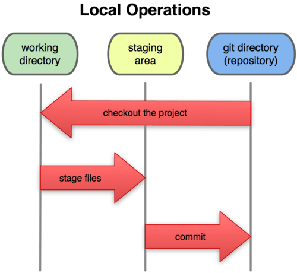

¡Bienvenidos a mi Blog de Programación!
Hola a todos, bienvenidos a este blog dedicado a compartir conocimientos sobre Git/GitHub y comandos de terminal que hemos aprendido durante las clases. Este espacio está diseñado para servir como referencia rápida de los conceptos más importantes.
En este blog encontrarás información práctica sobre:
- El flujo de trabajo con Git y GitHub
- Los comandos más utilizados en Git con ejemplos
- Una referencia de comandos de terminal esenciales
- Ejemplos prácticos de cada concepto
Este blog está organizado en dos secciones principales:
- Git y GitHub: Donde aprenderás el flujo de trabajo básico, comandos fundamentales y buenas prácticas.
- Comandos de Terminal: Una referencia de los comandos más utilizados en la terminal, con ejemplos y explicaciones.
¿Por qué aprender Git y comandos de terminal?
Git es una herramienta esencial para cualquier desarrollador moderno, ya que permite:
| Beneficio | Descripción | Importancia |
|---|---|---|
| Control de versiones | Mantener un historial completo de cambios | Alta |
| Colaboración | Trabajar con otros desarrolladores sin conflictos | Alta |
| Respaldo | Tener copias de seguridad de tu código | Media |
| Experimentación | Probar nuevas ideas sin afectar el código principal | Media |
Vista previa de Git

# Ejemplo básico de flujo de trabajo en Git
git init
git add .
git commit -m "Primer commit"
git push origin main
git init
git add .
git commit -m "Primer commit"
git push origin main